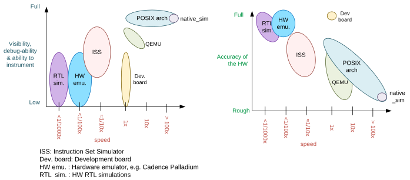

POSIX 架构
概述
原生模拟器（native simulator）与 POSIX 架构和 inf_clock SOC 层相结合，为一组虚拟测试开发板提供了基础层、架构层和 SOC 层。
借助它们，Zephyr 应用程序可以与 Zephyr 内核一起编译，生成一个普通的可执行文件，作为原生应用程序在主机操作系统上运行，无需仿真。您可以使用主机原生工具来编译、调试和分析 Zephyr 应用程序，从而在开发早期阶段无需特定架构的目标硬件。
备注
POSIX 架构与 POSIX 操作系统抽象 无关，不应混淆。后者提供一个适配层，使需要 POSIX API 的应用程序能够在 Zephyr 上运行。
基于 POSIX 架构的开发板类型
目前有两类 POSIX 开发板：native_sim 和 bsim 开发板。二者的主要目标和原则相同，但前者旨在作为与硬件无关的测试平台，在某些情况下会使用主机操作系统的外设；后者则旨在模拟特定的硬件平台，侧重于其射频（例如 BT LE），并使用 BabbleSim 物理层模拟及框架，同时与主机完全解耦。
主机系统依赖
此移植是为在 Linux 中运行而设计和测试的。
备注
要为 32 位目标构建，系统中必须安装 32 位 C 库（在 Debian/Ubuntu 中由 gcc-multilib 软件包提供）。
备注
由于 macOS 与其他典型 Unix 系统之间存在根本差异，已知 POSIX 架构 无法 在 macOS 上运行。
备注
要在 Windows 中使用，需要一个运行 Linux 客户机的虚拟机。可以使用 WSL 2（Windows Subsystem for Linux v2），或运行您喜欢的 Linux 发行版的其他虚拟机。注意：旧版 WSL 1 的功能非常有限，无法运行 32 位二进制文件，例如默认的 32 位 native_sim 构建配置。
重要限制
此移植所基于的前提假设决定了哪些事能做、哪些事不能做。这些限制源于代码直接在主机 CPU 上原生执行，没有任何插桩，也没有手段在模拟 CPU 未休眠时打断它。
可以把代码想象成在一个时钟无限快的模拟 CPU 上执行：CPU 运行期间不会经过任何时间。因此在代码执行期间，中断（包括定时器中断）不会到来；唯一的例外是软件启用或取消屏蔽某个挂起的中断时，该中断会立即到来。
这种行为是有意为之，因为它为开发和调试提供了确定性的环境。更多信息请参阅 Rationale for this port 和 架构 章节
因此存在以下限制：
应用程序代码中 不能 有在不让 CPU 休眠的情况下等待某事发生的忙等待循环。如果存在忙等待循环，它们会表现为无限循环并使执行停滞。例如，下面这段在真实硬件上可以被中断的忙等待循环代码，会使所有线程、内核和硬件模型的执行停滞：
while (1){}
同样，下面这段期望由中断处理程序或其他线程更新
condition的代码，在为此移植编译时也会使应用程序停滞。volatile condition = true; while (condition){}
依赖自身执行速度的代码通常无法按预期工作。例如，下面所示的代码很可能无法按预期工作：
peripheral_x->run = true; /* Wait for a number of CPU cycles */ for (int i = 0; i < 100; i++) NOP; /* We expect the peripheral done and ready to do something else */
此移植并非用于、也不可能帮助调试硬件与软件之间的竞争或类似的时序相关问题。
由于没有 I/O 或 MMU 仿真，不能使用硬编码的内存地址。
规避这些限制
如果存在忙等待循环，应用程序会停滞在其中，问题会很明显。要找到该循环，可以在调试器中运行二进制文件，在执行卡住后将其暂停；暂停的位置就在该循环的某处。
最好的解决办法是删除该忙等待循环，改用合适的内核原语来同步线程。注意，忙等待循环通常是不良的编码实践，因为它们会让 CPU 持续执行并消耗电能。
如果确实无法删除忙等待循环，在等待中断时可以添加一个条件编译的 k_cpu_idle() 调用，或者添加一个以微秒为单位、延时较短的 k_busy_wait() 调用。对于前面的例子，按如下方式修改代码即可正常工作：
volatile condition = true;
while (condition) {
#if defined(CONFIG_ARCH_POSIX)
k_cpu_idle();
#endif
}
主要的不支持功能
目前，此架构不支持的最主要功能如下：
用户模式/用户空间：为这些目标构建时，
CONFIG_USERSPACE始终处于禁用状态，所有对内核的调用都以普通调用的方式进行。栈检查：
CONFIG_HW_STACK_PROTECTION、CONFIG_STACK_CANARIES和CONFIG_THREAD_ANALYZER。这是因为 Zephyr 为线程分配的栈并不像在其他架构中那样被 真正 使用。更多信息请查看 架构章节中关于架构层的段落。
Rationale for this port
此移植的主要目的是：
允许使用原生工具对代码进行功能调试、插桩和分析。
允许进行功能回归测试，以及具备代码全部功能的模拟。
快速运行测试：每秒实际时间可模拟数分钟的时间。
能够连接到运行速度可能远快于或远慢于实时的外部工具。
确定性、可重复的运行：不得存在任何随机性或不确定性（除非使用了主机外设）。结果 不得 受以下因素影响：
调试代码或对代码插桩。
在断点处暂停，稍后再继续。
主机的性能或负载。
此移植的目的不是调试硬件/软件竞争、错过硬件编程截止时间，或中断在意外时刻到来之类的问题。这些问题通常应使用周期精确的指令集模拟器（ISS）或开发板来调试。
与其他方案的比较
此移植并不试图取代周期精确的指令集模拟器（ISS）、开发板或 QEMU，而是对它们的补充。此移植的主要目标是实现前面 Rationale for this port 章节中所述的目标。

不同调试方案的比较。注意，真实度有很多维度：具有真实的内存映射或仿真指令的精确执行时间只是其中一部分；准确地仿真外设是另一方面。
此原生移植直接为主机架构（通常是 x86）编译代码，不含任何插桩或监控代码。代码直接在主机 CPU 上执行，也就是说，代码会以尽可能快的速度执行。
模拟时间通常与主机的实际时间解耦。如何仿真指令执行速度的问题，通过假设代码在零模拟时间内执行来解决。
没有 I/O 或 MMU 仿真。如果尝试通过硬编码地址访问内存，二进制文件会直接发生段错误。对于相关外设，此架构的驱动和硬件模型会向应用程序开发者屏蔽这一点。总体而言，此移植并非用于帮助开发目标硬件的底层驱动，而是用于开发应用程序代码。
可以像其他任何 Linux 应用程序一样，使用所有常规的原生开发工具来调试、插桩或分析代码。
执行完全可重现，可以随时暂停而不产生副作用。
此移植与 QEMU 的比较：
使用 QEMU 时，需要以最接近目标开发板的开发板（例如基于 ARM 的开发板）为目标来编译镜像。QEMU 仿真开发板的真实内存布局，加载编译好的二进制文件，并通过指令翻译在主机 CPU 上执行该面向 ARM 的二进制文件。根据配置，QEMU 还提供一些外设的模型，在某些情况下还可以将主机硬件作为仿真的目标外设提供。
QEMU 无法提供任何执行速度的仿真。它只是尽可能快地执行代码，由主机 CPU 的速度决定仿真 CPU 的速度。由于执行速度取决于主机系统的性能和负载，这会产生高度不确定的行为。
由于指令需要翻译为主机架构的指令，并且需要仿真目标 CPU 和 MMU，因此会带来性能损失。
可以将 gdb 连接到 QEMU，但几乎没有其他插桩能力。
执行不可重现。某些缺陷可能只会在部分运行中触发，取决于计算机及其负载。
此移植与 ISS 的比较：
使用周期精确的指令集模拟器时，需要以真实的 CPU/平台或足够相近的型号为目标进行编译。内存布局会被建模，部分或全部外设也会被建模。
模拟器加载二进制文件，逐条缓慢地解释每条指令，并计算每条指令所需的时间。时间是模拟的，与实际时间完全解耦。模拟速度通常比实际时间慢 10 到 100 倍。
一些指令集模拟器可以与 gdb 配合使用，并可能提供一些额外的代码分析工具。
执行完全可重现。通常可以随时暂停执行而不产生副作用。
架构与设计
备注
本描述适用于代码树中的开发板，但其他基于 POSIX 架构的开发板不必遵循此处描述的内容。


以 Zephyr 的 native_sim 开发板为目标构建时，我们会使用 POSIX 架构 和 inf_clock SOC 层来构建嵌入式软件，即应用程序、Zephyr 内核以及所选的子系统和驱动。构建结果是一个预链接的 elf 库，其中包含可以称为嵌入式软件的内容。然后会构建 native simulator 运行器。之后，“嵌入式软件”和运行器会被链接在一起，形成最终的 Linux 可执行文件。这个最终的可执行文件通常名为 zephyr.exe，可以像其他普通 Linux 可执行文件一样运行或调试。
原生模拟器运行器提供 Linux 程序入口点、命令行参数解析、硬件模型调度器，以及一个用于仿真 CPU 启动/停止和 CPU 线程切换的组件。它还提供一种机制，用于注册需要在可执行文件生命周期不同时间点运行的函数。以 native_sim 为目标时，原生模拟器还会与一些基本的硬件模型（例如系统定时器和中断控制器）一起构建。更多信息请参阅 原生模拟器设计文档。
native_sim 目标是带有简单硬件模型的单微控制器（MCU）目标。其他目标，例如 模拟的 nRF5340（nrf5340bsim），则是多 MCU 目标：可以为每个 MCU 构建一个嵌入式 Zephyr 镜像，所有 MCU 镜像和运行器会与这些 SOC 更精细的硬件模型一起组装成一个可执行文件。
原生模拟器运行器上下文与嵌入式上下文
值得注意的是，嵌入式软件库会首先进行预链接，也就是说，该库内部所有可以解析的符号都会被解析。之后，除了少数带有特殊标注的符号外，该库的所有符号都会在后续链接中被隐藏。这样，运行器链接阶段既不会链接到这些隐藏的符号，也不会与它们冲突，无论是运行器本身的符号还是其他 CPU 嵌入式软件库的符号。还值得注意的是，在第一次嵌入式软件库链接中，所有预期的 Zephyr 段都会使用 Zephyr 链接脚本构建并排序。
构建嵌入式软件时，可以选择将其与嵌入式 C 标准库链接，也可以在此阶段保留所有未解析的 C 库调用，让它们在最终阶段与主机 C 库链接。
因此，从概念上可以把构建分为两个独立的上下文：一个是嵌入式/Zephyr 上下文，在其中构建 Zephyr OS 和针对给定 MCU 的应用程序，并且可以使用嵌入式 C 库构建；另一个是运行器上下文，它始终使用主机 C 库构建，并且对嵌入式上下文的可见性非常有限。
从嵌入式上下文可以轻松调用运行器上下文：除非在第一次链接中已有同名的嵌入式符号被链接，否则所有运行器上下文的符号在最终链接阶段都可以被链接。但从运行器上下文只能链接嵌入式上下文中用 NATIVE_SIMULATOR_IF 宏标注的符号。
在 Zephyr 构建系统中，可以通过将文件添加到 cmake native_simulator 库目标，请求在运行器上下文中构建该文件。更多信息请查看 arch/posix/CMakeLists.txt。
更多信息请参阅原生模拟器的 构建文档
架构层
POSIX 架构主要负责两件事：
设置 Zephyr 构建，为主机架构生成一个静态库，供之后的原生模拟器构建使用，并与原生模拟器运行器链接。
在 Zephyr 内核期望架构层提供的 API 与原生模拟器的 CPU 线程仿真（NCT）之间提供一个轻量的适配层。
该层与 NCT 一起将每个 Zephyr 线程映射为一个 POSIX pthread，并按照 Zephyr 内核的指令一次只允许一个软件线程执行，从而仿真单线程的 CPU/MCU。每当 Zephyr 内核需要在两个线程之间进行上下文切换时，POSIX 架构就会通过 NCT 阻塞和解除阻塞相应的 pthread。
此架构向内核提供与其他架构相同的接口，因此对应用程序是透明的。
注意，所有线程都使用普通的 Linux pthread 栈，而不会将 Zephyr 分配的线程栈用于调用栈或自动变量。Zephyr 栈（分配在“静态内存”中）仅被 POSIX 架构用来保存线程的簿记数据。
使用此架构时，代码会为主机系统原生编译，通常编译为 32 位二进制文件，并假设指针和整数类型为 32 位宽。
SOC 层
该 SOC 层主要是原生模拟器 CPU 仿真层之上的一个很薄的层，负责处理 CPU 启动/停止的模拟、架构层的初始化，并在 CPU 启动过程中调用 Zephyr 启动函数（z_cstart()）。
它还提供 native_tasks，并规定了它期望开发板层提供的其他一些钩子。
开发板层
开发板层负责提供 SOC 层和原生模拟器运行器所需的所有钩子，包括启动 CPU 的钩子（会调用 SOC 层）、处理中断的钩子，以及用于底层跟踪和忙等待处理的钩子。
整体的执行和调度由原生模拟器运行器自身处理，必要时它会调用开发板层的钩子。有关原生模拟器如何运行嵌入式软件的信息，请参阅其 设计文档
对于更复杂的模拟开发板，例如 bsim 开发板，开发板层还提供模拟真实目标和 SOC 所需的逻辑和配置。
注意，此架构中 SOC 与开发板的划分方式与其他 Zephyr 目标不同。这样做是为了让差异很大的真实 SOC 模拟能够共享通用的架构层和 SOC 层，同时将真实 SOC 特有的替代逻辑放在开发板层。
忙等待
忙等待依靠开发板和原生模拟器提供的逻辑工作。各开发板的实现不必相同，但 native_sim 和 nrf*bsim 开发板 的工作方式类似，都是将开发板特定的 arch_busy_wait() 与原生模拟器提供的一个特殊虚拟硬件定时器结合使用。
更多信息请查看 原生模拟器忙等待设计文档。
NATIVE_TASKS
soc_inf 层提供一种特殊类型的钩子，称为 NATIVE_TASKS。
它们允许（在构建/链接时）注册嵌入式上下文函数，这些函数会在进程执行的不同阶段被调用：命令行解析之前（因此可以用此钩子注册动态命令行参数）、硬件模型初始化之前、模拟 CPU 启动之前、模拟 CPU 第一次进入休眠之后，以及应用程序退出时。
这些钩子最终基于 原生模拟器任务，用户也可以从运行器上下文中构建的代码注册这些任务。